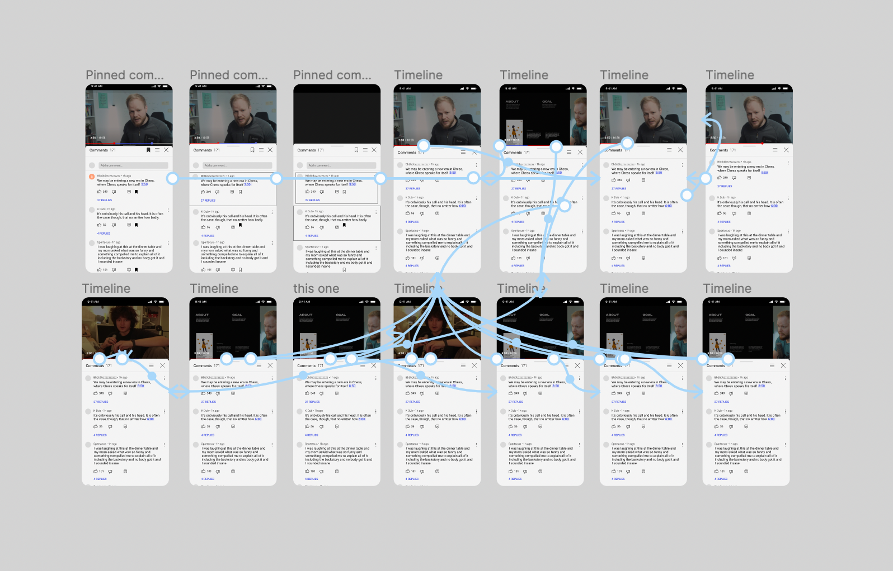

Selected Work

Stream Social
A UX case study advocating for a live-activity-centric approach to music streaming and discovery.
A UX case study advocating for a live-activity-centric approach to music streaming and discovery.

Youtube Undo
An interaction design case study on timestamp comments and scrubbing through youtube videos.
An interaction design case study on timestamp comments and scrubbing through youtube videos.

Similarity + difference judgments
A study I worked on about analogical reasoning.
A study I worked on about analogical reasoning.
meganmai.net
My personal website.
My personal website.